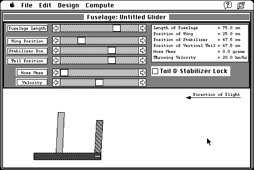

Download
GliderDesign.v121.zip (205K) Glider Design! 1.2.1 repackaged into a zipped hfs disk image and checksum file. The disk image can be mounted with Mini vMac.
GliderDesign.v121.sit (209K) Glider Design! 1.2.1 in the original format.
copyright: Michigan Space Grant Consortium
mod date: Apr 13, 1993
license: freeware
official url :
Glider Design! for Classic MacOS
Determines whether the glider you design will fly, and if not, explains why. By Michael F. Kamprath. For “System 7.0 or greater”.

If you find these downloads useful, please consider helping the Gryphel Project, which hosts them.
Here are the md5 checksums for the downloads, signed with Gryphel Key 5:
--------- GRY SIGNED TEXT --------- 920632abc7b401b8957fa881d0f30360 GliderDesign.v121.zip 263ef52ab9da5062cec822b926e1e277 GliderDesign.v121.sit ------- BEGIN GRY SIGNATURE ------- Gry/4Xa8CFcUzxdN/KKQfLtjlucT93jvFzp67BdB8EN1BwudX8OgU3JfcOHzGnPQ mevFssNkMzwfZhllDPm+rqdJbu8VZvV119YDOX+jz1n+rHwy19fy0+TrEb8ZKofz kFTMKlESPFjksJl822MoM3H4BhqPug5Qc+K6AAbl+u178IMtrp+4+uadNSMra/qu -------- END GRY SIGNATURE --------